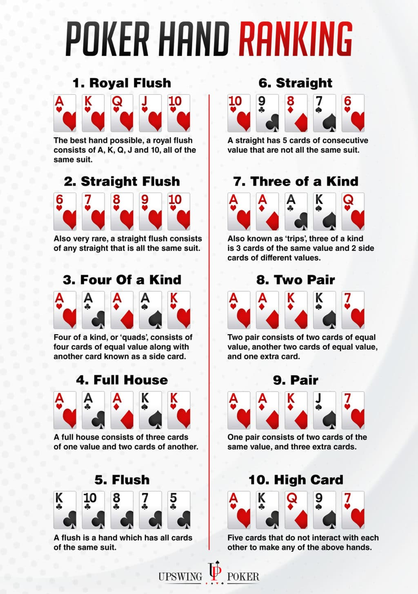

Basic Rules of Texas Hold'em
Texas Hold'em is the most popular poker variant. Here's how to play:
- The Blinds: The game begins with two players posting the "blinds" - forced bets that start the betting.
- The Deal: Each player receives two private cards (known as "hole cards").
- First Betting Round: Starting with the player after the big blind, each player can call, raise, or fold.
- The Flop: Three community cards are dealt face up.
- Second Betting Round: Another round of betting occurs.
- The Turn: A fourth community card is dealt.
- Third Betting Round: Another round of betting.
- The River: The fifth and final community card is dealt.
- Final Betting Round: The last betting round.
- The Showdown: If more than one player remains, cards are shown and the best five-card hand wins.
Players make the best five-card hand possible using any combination of their two hole cards and the five community cards.
The Button and Blinds
The dealer position and blinds are fundamental to poker structure:
- The Button: A disk that marks the theoretical dealer position. The button rotates clockwise after each hand. The player on the button acts last in all post-flop betting rounds, giving them a strategic advantage.
- Small Blind: The player to the immediate left of the button must post the small blind, usually half the minimum bet. This is a forced bet that must be made before receiving any cards.
- Big Blind: The player to the left of the small blind must post the big blind, equal to the minimum bet. Like the small blind, this is a forced bet made before seeing any cards.
After each hand, the button moves one position clockwise, and the blinds follow accordingly. This ensures that the advantage of position rotates fairly among all players.
Hand Rankings
In poker, hands are ranked from highest to lowest as shown in the image below:

Betting Rules
When it's your turn to act, you have several options:
- Check: Pass the action to the next player (only if no bet has been made)
- Bet/Raise: Place a bet or increase the current bet
- Call: Match the current bet to stay in the hand
- Fold: Discard your hand and forfeit any chance at the pot
The betting continues clockwise around the table until all players have either called the current bet or folded.
Tips for Beginners
- Start with low stakes games until you're comfortable with the rules
- Pay attention to your position at the table - playing late positions is advantageous
- Be selective about which starting hands you play
- Watch for betting patterns from your opponents
- Practice good bankroll management - never play with money you can't afford to lose
- Learn to calculate pot odds to make mathematically correct decisions